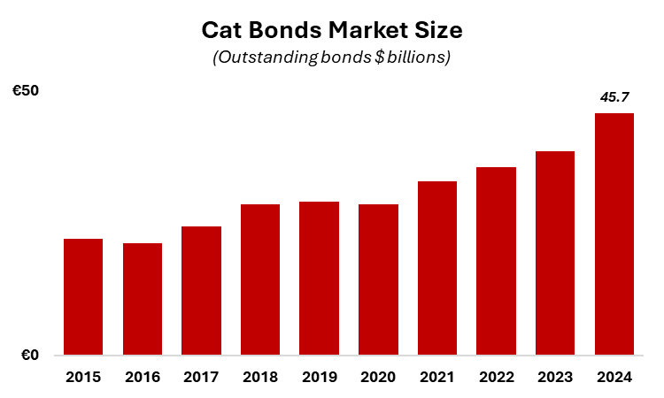
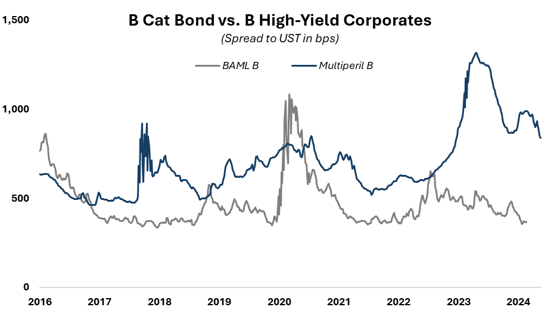

Capital Markets: Catastrophe Bonds and Climate Risk Pricing in Real Estate
How insurance-linked securities reflect investor sentiment on climate risk
In a world of rising climate volatility, capital markets are now pricing risk with increasing clarity. And for commercial real estate (CRE) investors, catastrophe bonds (once niche) are offering a sharper signal.
When Hurricane Ian swept through Florida in 2022, it left a staggering $112 billion in damages. But beyond the immediate costs, this event triggered a ripple effect in financial markets - especially in catastrophe bonds (cat bonds). For institutional investors, this was a reminder that climate risks are not just theoretical; they’re immediate, material, and reshaping how risk is priced across asset classes, particularly in CRE.
The financial market is increasingly recognizing the impact of climate change, and cat bonds have emerged as a critical asset class providing insight into investor perception of climate risk. The current scale of this unique market at nearly $50 billion is a byproduct of tremendous growth (+17% in 2023 alone), more than doubling since 2015, and has captured the interest of a wide array of institutional investors.

Source: “ILS Annual Report”, Aon Securities, Sept 2024
Cat bonds have emerged as a critical asset class, not only for managing risk but for understanding how capital markets perceive climate exposure.
Understanding this dynamic is essential for stakeholders in CRE and other sectors exposed to these risks, as it may highlight broader market trends and investor sentiment. For CRE stakeholders, understanding this dynamic helps translate capital market signals into actionable portfolio strategies.
How Cat Bonds Work: Tying Risk to Climate Events
Cat bonds are unique debt instruments designed to provide payouts when specific, predefined catastrophic events like hurricanes, floods, or earthquakes occur. The way these bonds function is straightforward: if the qualifying disaster happens, the investor may lose their principal, but if no disaster occurs, the investor earns a higher-than-average yield.
The key to this structure is the “trigger event,” which is based on defined metrics [1]. For example, a cat bond might be triggered by a Category 5 hurricane making landfall in a particular region. Investors in cat bonds essentially take on the risk of such events, and in return, they earn a premium that reflects this risk.
For commercial real estate investors, this is particularly relevant. The same types of extreme weather events that trigger cat bonds can have severe impacts on properties, from physical damage to long-term asset devaluation. By understanding how these risks are priced in the bond market, CRE stakeholders can gain a deeper understanding of the potential financial implications of climate risks on their portfolios.
Event Loss Probability: How Climate Risks Are Priced
One of the most critical aspects of cat bonds is how they are priced, which relies heavily on probabilistic models. These models estimate the likelihood of specific disasters, like a 1-in-100-year flood or hurricane, occurring within a given time frame. This probability (often called the “event loss probability”) is a major determinant of the bond’s risk profile and yield.
As these probabilistic models become more sophisticated, and as real-world data on climate disasters grows more concerning, we’ve seen an upward adjustment in yields. Investors are requiring greater compensation for taking on the increasing risk of climate events, which reflects a growing awareness of the heightened volatility climate change introduces.
Current Trends: The Climate Risk Premium


The yield differential between cat bonds and comparable high-yield corporate bonds illustrates the pricing trade-off investors demand for climate risk. Swiss Re compared cat bond indexes and high-yield corporate bond indexes in the US across similar credit risk profiles to isolate this climate risk premium inherent in cat bonds [2]. Despite similar credit risk profiles, cat bonds consistently offered higher yields, showing that investors expect to be compensated more for the uncertainty surrounding climate-related disasters than for corporate or economic risks [3].
This premium has widened in recent years, particularly following major climate events. Specifically, in the aftermath of Hurricane Ian in 2022, cat bond spreads over corporate bonds widened dramatically, reflecting a reassessment of catastrophic risk. By early 2024, B-grade cat bonds were offering over 600 basis points more than similar grade high-yield corporate bonds -highlighting just how sharply the market is pricing in the risk of climate events.
Actionable Insights for Commercial Real Estate Investors
For CRE investors, the pricing dynamics of cat bonds offer actionable insights. These bonds provide a quantitative reflection of how climate risk is being assessed in the broader financial markets. As cat bond yields rise, they signal an increasing concern about climate events, offering CRE investors a glimpse of potential vulnerabilities within their own portfolios.
How can CRE investors respond to these market signals?
- Assess Vulnerability: Use the yield signals from cat bonds to reassess your properties’ exposure to high-risk areas. Properties in regions prone to hurricanes, floods, or wildfires may face increased insurance costs, decreased asset value, or even physical damage.
- Invest in Mitigation: Consider proactive investments in climate resilience, such as flood barriers, upgraded stormwater management systems, or infrastructure built to withstand extreme weather.
- Diversify Portfolios: If your portfolio is concentrated in high-risk areas, diversifying into regions with lower climate risk could help hedge against future losses.
- Align with Market Trends: The rising climate risk premium in cat bonds also hints at a broader market trend - investors are increasingly pricing in the costs of climate change. CRE investors should align their portfolios with this reality by incorporating risk assessments and mitigation strategies into their long-term plans.
Cat Bonds as a Quantitative Measure of Climate Risk
Cat bonds serve as more than just a niche financial product, they are a reflection of how the financial markets view and price climate risk. The increasing yield premiums and widening spreads compared to traditional bonds suggest that climate change is no longer seen as an outlier but as a core risk factor. Investors are increasingly willing to demand higher returns for taking on the uncertain, yet growing threat of climate events.
For commercial real estate stakeholders, these metrics are more than numbers - they represent early warning signals for revaluations and insurance repricing ahead. As the market adjusts to the reality of more frequent and severe climate disasters, property owners and investors need to be equally responsive. Whether that means investing in risk mitigation, diversifying portfolios, or aligning properties with climate science, the insights gained from cat bonds could be the key to staying ahead in an increasingly unpredictable world.
[1] These triggers can be based on several types of metrics:
- Indemnity-Based Triggers: Payouts occur when the sponsor's actual losses from a disaster exceed a specified threshold. These triggers align most closely with the sponsor's own insurance losses and are typically preferred for their precision but may involve a longer claims settlement process.
- Industry Loss Triggers: Payouts are activated based on the total insured losses reported across the industry, providing a broader view of catastrophe impacts but with less direct alignment to the sponsor's specific losses. These are useful when investor transparency and speed are priorities.
- Parametric Triggers: These triggers rely on physical event parameters (i.e. wind speeds for hurricanes, earthquake magnitude) rather than actual financial losses. They offer rapid payouts, as there is no need to wait for loss assessments but carry "basis risk" (the risk that the payout does not perfectly match the sponsor's losses).
- Modelled Loss Triggers: These rely on pre-agreed loss models, where payouts are based on simulations or forecasts of the event's impact. Modelled loss triggers allow for more sophisticated risk forecasting but depend on the accuracy and assumptions within those models.
[2] Charts adapted from "Insurance-Linked Securities Market Insights", Swiss Re, Feb 2024. Swiss Re Capital Markets represents cat bonds as Multiperil B bond indexes (>1 year to maturity that have non-zero exposure to US WS and US EQ and an EL between 181-375 bps, or an actual B rating). Whereas high-yield corporate bonds are represented by BofA Merrill Lynch High Yield OAS.
[3] As cat bonds are floating rate in nature, they have limited rate exposure. In charts, this was most notable during the volatility at the onset of the Covid-19 crisis in early 2020, where high-yield OAS dramatically increased ahead of cat bond yields.